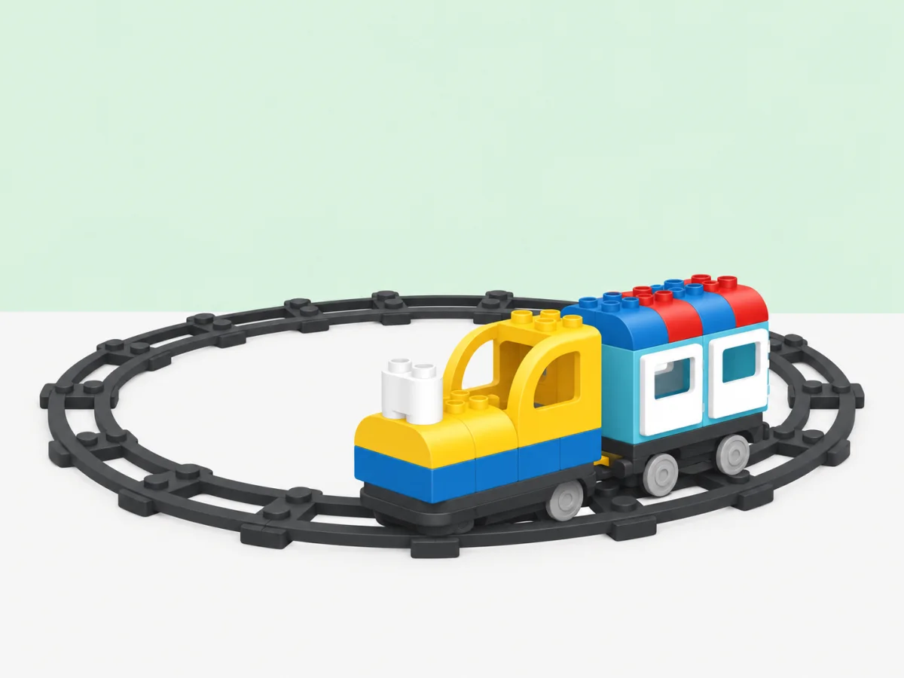

El bucle ferroviari: repetir un recorregut
Explorar la repetició amb una via tancada, fer prediccions i comparar el bucle físic amb una seqüència d’accions.
🌱 Situació, repte i intenció
- Representar una rutina que es repeteix amb una seqüència d’accions.
- Construir i comparar una via tancada i una via oberta.
- Registrar les voltes sense atribuir al tren un comptador que no té.

Aquesta activitat adapta la lliçó oficial sobre vies en forma d’O i repetició a un servei de biblioteca amb estacions i torns.
🎯 Aprenentatges i vocabulari
- Motor Push & Go i recorregut sobre vies.
- Bucle com a propietat de la via tancada; el tren no executa un bucle de codi ni compta voltes per si mateix.
🧰 Materials i preparació
- Tren Coding Express i trams de via corbs i rectes per construir un circuit tancat.
- Tres estacions amb noms o pictogrames inventats per la classe.
- Fitxes de passatgers i una targeta de registre per comptar les voltes.
- Llapis de colors per dibuixar la ruta abans de construir-la.
Comprova que el tren, les vies i les peces d’acció del kit disponible funcionen. Coding Express està retirat comercialment; aquesta proposta és per als centres que ja disposen del conjunt.
📅 Seqüència didàctica
Planifiqueu el recorregut
Desenvolupament del pas
Trieu dues o tres estacions i poseu-les en ordre amb targetes. Assenyaleu el punt de partida i dibuixeu una fletxa que mostre cap a on circularà el tren. Predigueu en quina estació passarà primer, segon i tercer.
Dissenyar la línia
Desenvolupament del pas
Dibuixeu i munteu una via tancada que passe per les estacions i torne a l’inici. Comproveu que les unions encaixen i que el tren pot circular sense forçar les peces. Marqueu el punt de partida amb una targeta.
Predir i provar
Desenvolupament del pas
Abans d’engegar, cada equip prediu l’ordre en què el tren passarà per les estacions. Doneu-li una empenta suau. Cada vegada que torne a passar per la targeta inicial, poseu una fitxa en una columna. Després de dues voltes, atureu el tren amb la mà i compareu el recompte amb la predicció.
Comparar amb una ruta oberta
Desenvolupament del pas
Si teniu prou vies, obriu un tram del circuit per convertir-lo en una via amb inici i final diferents. Feu passar el tren una vegada i observeu què ocorre quan arriba al final. Compareu-la amb la via tancada: el tren no gira ni torna automàticament al principi d’una via oberta.
Millorar el servei
Desenvolupament del pas
Amb el tren aturat, afegiu una estació o canvieu-la de lloc. Repetiu la predicció i feu una altra volta. Per pujar o baixar figures, atureu sempre el tren abans de tocar-les.
🧪 Evidències i avaluació
Registreu quantes vegades el tren passa pel punt inicial i l’ordre real de les estacions. Compareu el circuit tancat amb la via oberta. Si s’atura o descarrila, atureu-lo i reviseu les unions abans de tornar a començar.
Preguntes per comprovar
- Quina part del recorregut es repeteix? On torna a començar?
- Com sabem que el tren ha fet una volta completa?
- Si afegim una parada, quina part del pla hem de revisar?
- Una via tancada és el mateix que un bucle en un programa? Què comparteixen i què no?
✅ Evidències d’aprenentatge
- Un esbós que mostra les estacions i el punt on el recorregut torna a començar.
- Una predicció de l’ordre de les parades i un registre del que ha passat.
- Una explicació que distingeix el cicle de la via d’una repetició escrita en un programa.
♿ Participació, accessibilitat i seguretat
Per a una primera prova, feu una volta amb només dues estacions i una persona que assenyali el punt de retorn. Es pot participar movent passatgers, ordenant targetes o registrant voltes sense manipular el tren. Com a extensió, compareu dues rutes que visiten les mateixes parades en ordres diferents i justifiqueu quina és més clara per als viatgers.
Munteu les vies en una zona delimitada i manteniu els dits fora del mecanisme mentre el tren es mou. Atureu la locomotora abans de canviar vies o peces d’acció.
🔗 Referents i adaptació
La lliçó oficial sobre via en forma d’O relaciona el circuit tancat amb la idea de repetició. En aquesta activitat, la repetició és una propietat del recorregut físic; el tren no executa un bucle escrit ni compta voltes.